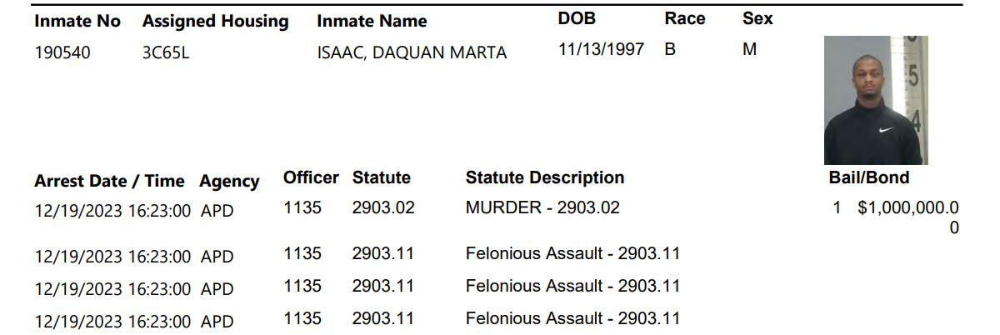

Timeline photos
Here is Da’Quan Mar’Ta Isaac's Summit County Jail roster image.
He's the man who likely murdered Ahmad Alibrahim - the 21-year-old store clerk at Borders' Drive Thru on December 12, 2023.
Da'Quan was trying to buy a black and mild cigar. Ahmad wouldn't accept his money because the money was in poor condition... possibly with blood or soil on it.
After Da'Quan pulled a gun, Ahmad gave him the cigar, and Da'Quan shot him anyway.
The last time I asked you to have any understanding for Da'Quan, many of you let me have it. You hated that I showed even the slightest amount of understanding and compassion for Da'Quan. So I'm sure it won't be any different here.
But if the only response to cruelty and savagery is eye-for-an-eye retribution, then what hope are we ever to have of getting better as a society? We never seem to change. Oppression leads to violence. Violence leads to more violence. And so we all live in a self-perpetuating circle of hell and hate.
DON'T YOU SEE! When a person does something bad and then we do something bad in response, then "who started it" doesn't matter. That gets forgotten. Then all we have left is tit-for-tat battles.
DON'T YOU SEE! Da'Quan couldn't take one more instance of being disrespected. His entire life, his entire family's life, has been nothing other than disrespect and lack of dignity. Da'Quan has been labeled a loser since the day he was born. Shoot, non-Black people didn't even need to look at Da'Quan to know he was a hoodlum. His very name proceeds him. That's why Black families are now naming their children names like Aiden and Jayden and Michael... so people can't be racist to their children until they at least hear their voice.
When Ahmad wouldn't accept Da'Quan's money, that was the straw that broke the camel's back. It was done. Da'Quan knew it was done. He knew the consequences of his actions. But he couldn't take one more slight. When his money wasn't good enough, it was game over for Da'Quan and, so tragically, Ahmad.
The more you hate someone, the more I am drawn to love them. It's like we are in a cosmic entanglement. You show hate, and I am instantly drawn to show love.
And that brings me to you. You know why you want to lock up Da'Quan and throw away the key (that is the most PG answer you have. Most of you have much more cruel desires.) don't you?
You hate Da'Quan and everything Da'Quan represents because you are afraid of Da'Quan. You are afraid of Black people. You are afraid of poor people. You are afraid. That's all it is. You are a timid little sheep that runs away at the first sign of feeling spooked.
You hated Da'Quan before you ever met Da'Quan or he pulled that trigger. You hate Da'Quan's family. You hate Da'Quan's friends. You hate Da'Quan's clothes. You hate every single thing about Da'Quan. That's why your family moved to Copley or Wadsworth decades ago... because Da'Quan and everything Da'Quan represents has been hated by your family for generations.
Da'Quan knows it.
And that's why he pulled the trigger.
But I don't hate you for it. You are just a timid little sheep that doesn't want any trouble. Sure, you use your Whiteness and money to make Da'Quan's entire life miserable and impossible. But it's just because you are little and afraid. I get it.
And I love you too.
I'm so sorry you are filled with so much fear of the world. It must be a very difficult way to live.